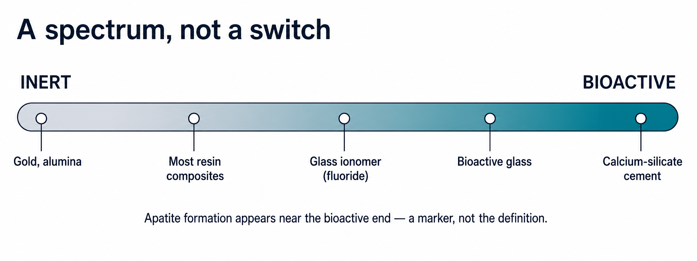
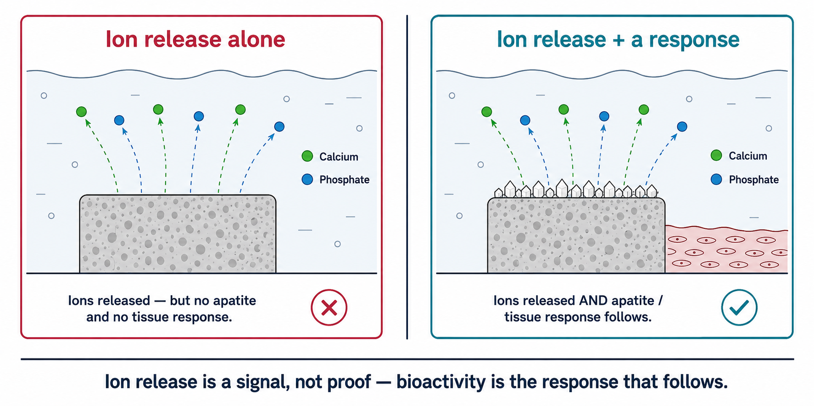
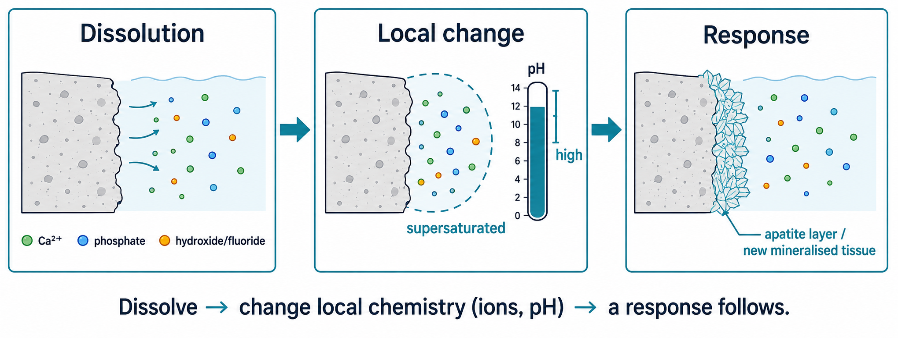
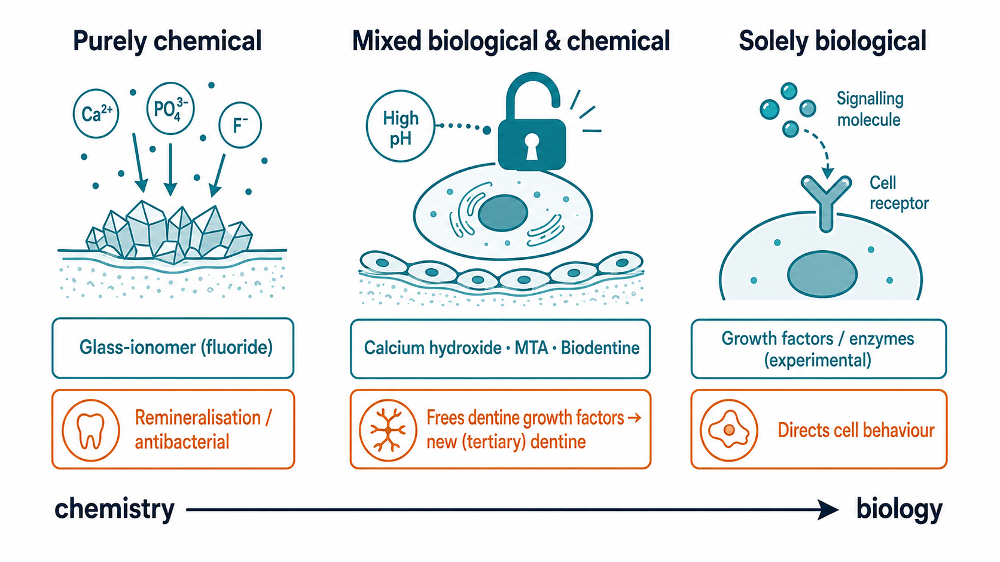
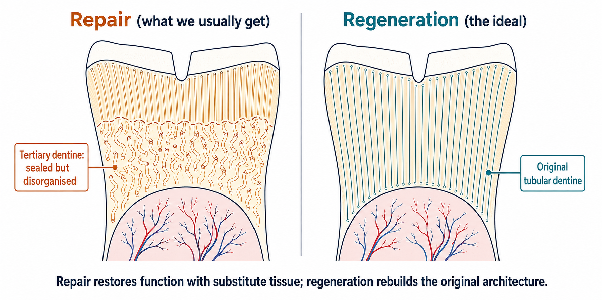
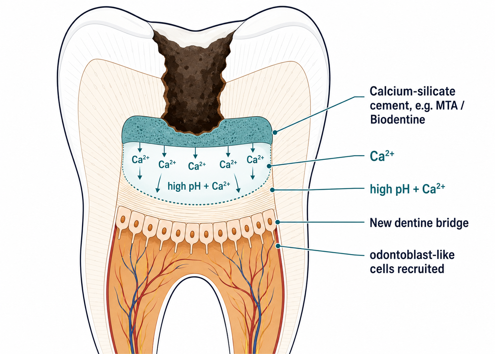

Phase 1 · Fundamentals · Lecture 06
What it really means for a dental material to be “bioactive” — broader than forming apatite, and worth more than the label on the box.
Learning objectives
Bioactivity is a concept first — the materials are only examples of it. We reason from what it is, to how it works, to how to judge a claim.
The concept
Don’t confuse the terms
Two definitions, one idea
Broadening the idea

FIG 06.1 Bioactivity as a spectrum of reactivity, from inert to strongly bioactive.
Myth vs fact

FIG 06.2 Release alone (✗) vs release + apatite / tissue response (✓).
Mechanism — in principle

FIG 06.3 Dissolve → change local chemistry (ions, pH) → a response follows.
Deep dive · optional
Routes of bioactivity

FIG 06.4 From pure chemistry to pure biology, with established examples.
A short history
Hench’s Bioglass (45S5): “bioactive” = forms apatite and bonds to bone. Narrow, born in orthopaedics.
MTA reaches endodontics; bioactive-glass toothpastes arrive (~2004). The meaning broadens to ion release, remineralisation and pulp repair.
“Bioactive” appears everywhere — often on a single ion-release study. Marketing outruns the evidence.
The Northern Lights conference and the FDI Policy Statement demand a defined mechanism and proof. Mature meaning: specific, intended, proven.
An important distinction

FIG 06.5 Repair uses substitute tissue; regeneration rebuilds the original architecture.
The clinical anchor · vital pulp therapy

FIG 06.6 Ca²⁺ + high pH → odontoblast-like cells → a new dentine bridge.
Established materials
Reading the evidence
The trade-off
Take-home
Click any slide · press O to toggle · Esc to close